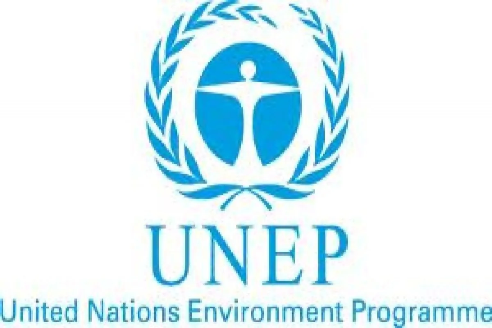
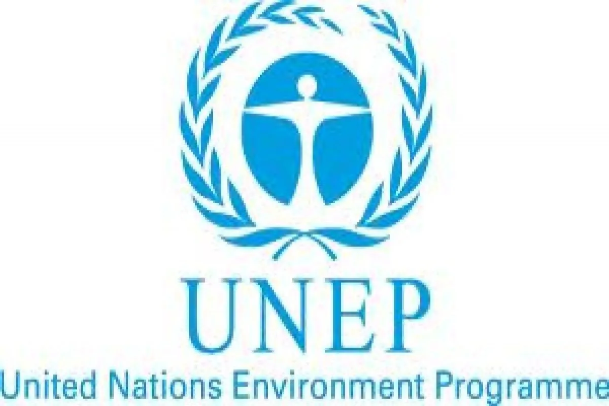

Lingkungan hidup khususnya ekosistem daratan merupakan masalah global yang dialami seluruh negara di dunia, maka itu, Indonesia juga harus bekerja sama dengan negara-negara lainnya tak hanya dalam satu kawasan saja, melainkan dalam skala yang lebih besar, yaitu hingga skala yang mendunia. Maka, Indonesia mengikuti beberapa kerja sama multilateral.
Salah satu kerja sama multilateral yang diikuti Indonesia adalah adalah Global Environment Facility (GEF). Kerja sama ini dilakukan melalui pendanaan hibah untuk berbagai proyek yang berfokus pada konservasi keanekaragaman hayati darat dan pengelolaan hutan berkelanjutan. Bentuk kerjasamanya adalah dengan menyediakan dana sumber keuangan untuk membantu indonesia sebagai salah satu negara megabiodiversity dalam mengimplementasikan tujuan lingkungan internasional, termasuk target yang terkait dengan ekosistem darat dan keanekaragaman hayati, juga dukungan proyek spesifik lewat dana yang mengalir ke proyek konservasi konkret di lapangan. Kerja sama ini juga mendukung program yang bertujuan untuk mengurangi emisi dari deforestasi dan degradasi hutan yang sejalan dengan REDD+ dan mempromosikan pengelolaan hutan yang berkelanjutan. GEF juga mendukung kebijakan terkait keanekaragaman hayati dalam perencanaan pembangunan nasional seperti yang terlihat dalam beberapa penyelarasan dokumen.
 

Indonesia juga bekerja sama dengan United Nations Environment Programme (UNEP) dalam bidang ekosistem daratan terutama melalui inisiatif terkait kehutanan, pemantauan hutan tropis, dan pengelolaan gambut berkelanjutan. Bentuk utama kerja sama tersebut meliputi sistem pemantauan hutan tropis yang merupakan kolaborasi Kementerian Lingkungan hidup dan Kehutanan (KLHK) dan UNEP yang telah menjalin kerja sama dan mengadakan pertemuan ahli untuk membahas dan memperkuat sistem pemantauan hutan tropis Indonesia. Hal ini penting untuk pengelolaan hutan yang akurat dan transparan. Juga pemberantasan pembalakan liar di mana UNEP mendukung upaya Indoneisa untuk mengatasi masalah pembalakan liar yang berdampak signifikan pada kerusakan ekosistem daratan dan keanekaragaman hayati. Tak hanya itu, kerja sama ini mencakup dukungan UNEP terhadap aksi iklim yang lebih luas di Indonesia dengan melibatkan konservasi dan pengelolaan sumber daya alam darat untuk mengurangi emisi gas rumah kaca. Terakhir, kerja sama ini juga melakukan m pertukaran data dan metodologi karena sepakat akan pentingnya hal tersebut dalam pekerjaan terkait lingkungan hidup, ekosistem, dan sumber daya alam baik darat maupun laut.